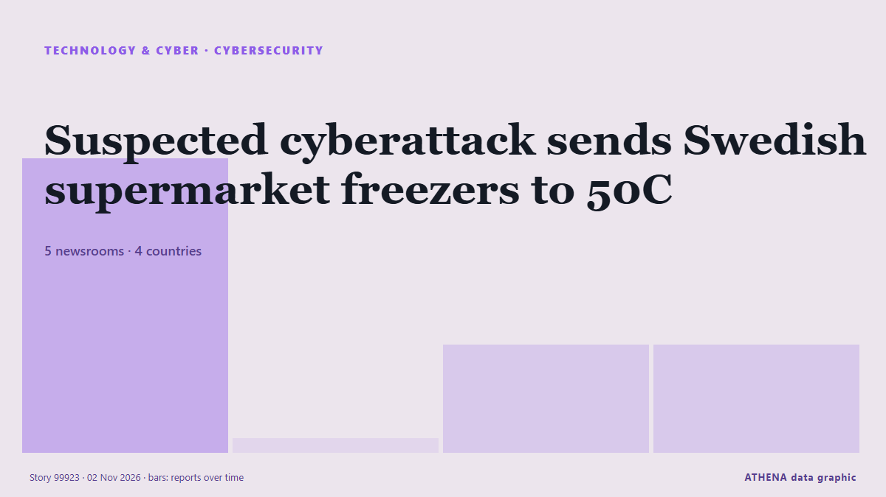

Cybersicherheit
GesponsertPräsentiert von  Cybernetics and Artificial Intelligence Lab Welcome to the Cybernetics and Artificial Intelligence Laboratory, established at the Department of Business Administration of the National
Cybernetics and Artificial Intelligence Lab Welcome to the Cybernetics and Artificial Intelligence Laboratory, established at the Department of Business Administration of the National
| 20. Okt. | 0 |
|---|---|
| 21. Okt. | 0 |
| 22. Okt. | 0 |
| 23. Okt. | 0 |
| 24. Okt. | 0 |
| 25. Okt. | 0 |
| 26. Okt. | 0 |
| 27. Okt. | 0 |
| 28. Okt. | 0 |
| 29. Okt. | 1 |
| 30. Okt. | 6 |
| 31. Okt. | 2 |
| 1. Nov. | 3 |
| 2. Nov. | 4 |
Schlagzeilen werden auf Englisch angezeigt, wie veröffentlicht.

Suspected cyberattack sends Swedish supermarket freezers to 50C
The temperature of freezers at several Swedish grocery stores rose sharply overnight, operators ICA and Coop said on Monday, with at least one store blaming the incident on a cyberattack. von Cyprus Mail
Ukraine and Russia both hit by cyberattacks on emergency apps
Authorities in both Ukraine and Russia said that their emergency alert mobile applications were targeted by cyberattacks late Sunday. von France 24 English
ClassNK updates ship cyber security guidelines to simplify compliance
ClassNK has released the second edition of its Guidelines for Cyber Security Management System for Ships, introducing clearer audit requirements and closer alignment with international cyber security… von Container News
Ukrainian air force says public air raid alert app has been hacked
For a short time, the app showed Kyiv and other areas subject to a nuclear alert. von The Straits Times
Ukraine's air-raid warnings app partially restored following cyberattack
The app's developers have restored some features, including warnings about drone and missile threats, while temporarily disabling the display of aerial assets on the map. von Ukrainska Pravda (English)
Jack Grealish in 'breach of club discipline' as David Moyes responds to Everton decision
Former Aston Villa skipper Jack Grealish was left out of Everton's squad for their match against Newcastle. von Birmingham Mail
Cyberattack exposes explicit footage on Cairo billboard
Egypt suspends digital advertising screens after breach affects displays in several countries. von News of Bahrain
Cloudflare Reports 18.2 Million Network-Layer DDoS Attacks in Q3, Up 38%
Threat actors are launching about 8,226 network-layer distributed denial-of-service (DDoS) attacks per hour, Cloudflare revealed Thursday. von The Hacker News
Police probe hacking of Kluang council LED screens after obscene content displayed
KLUANG, Oct 31 — Eight LED display screens belonging to the Kluang Municipal Council (MPK) around the town a... von Malay Mail
Canada, EU lay out vision for closer ties in ‘dangerous and divided’ world
Canada and the EU are laying out their vision for what a closer relationship looks like in an increasingly “dangerous and divided” where trade has become “weaponized.” von Global News (World)
WordPress RCE Flaw Draws Nearly 63,000 Attack Attempts in Just 24 Hours
Threat actors have been observed attempting to exploit a high-severity security flaw in WordPress Core shortly after patches were released. von The Hacker News